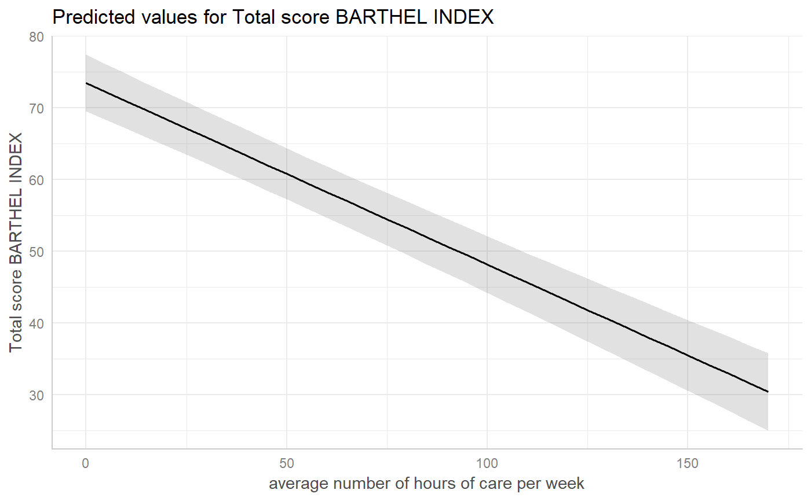
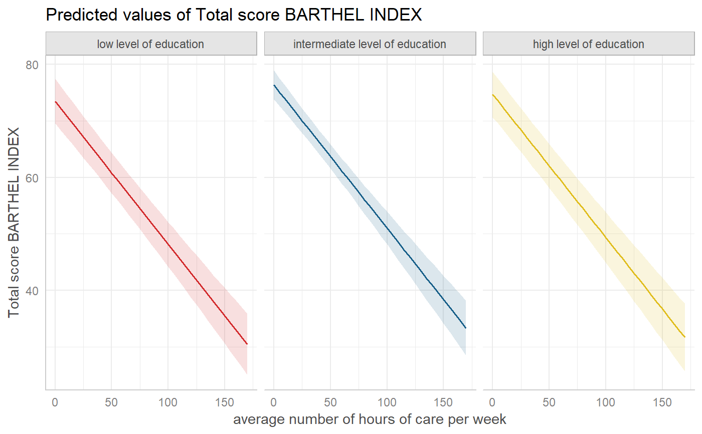
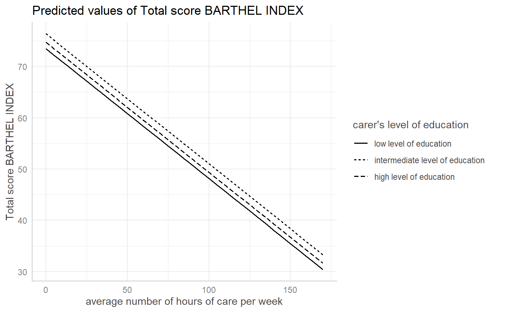
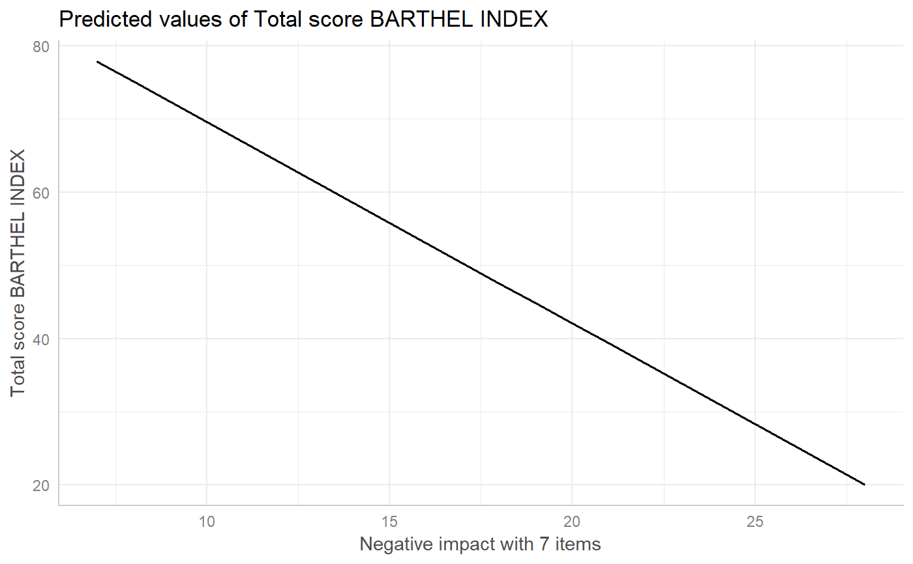
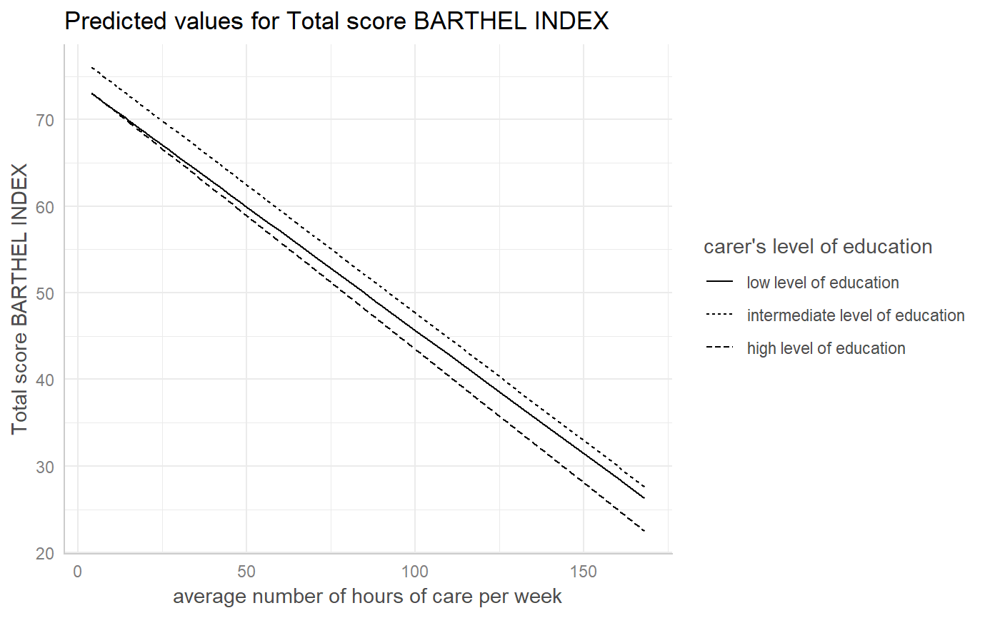
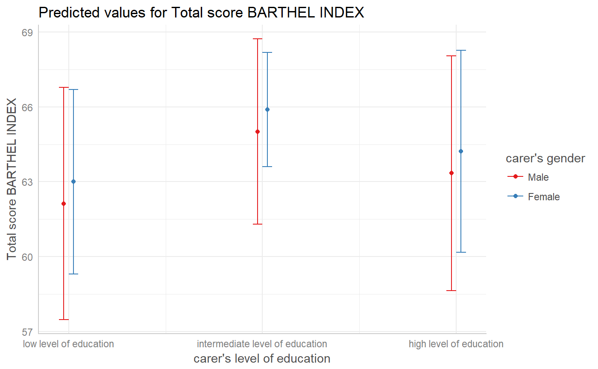
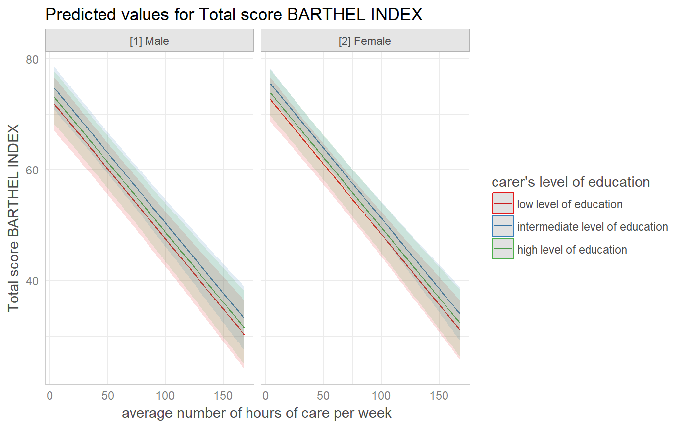
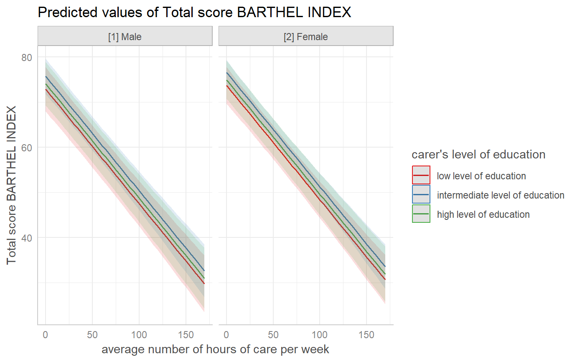

plot.RdA generic plot-method for ggeffects-objects.
# S3 method for ggeffects plot(x, ci = TRUE, ci.style = c("ribbon", "errorbar", "dash", "dot"), facets, rawdata = FALSE, colors = "Set1", alpha = 0.15, dodge = 0.25, use.theme = TRUE, dot.alpha = 0.5, jitter = 0.2, log.y = FALSE, case = NULL, show.legend = TRUE, show.title = TRUE, show.x.title = TRUE, show.y.title = TRUE, dot.size = NULL, line.size = NULL, connect.lines = FALSE, grid, ...) theme_ggeffects(base_size = 11, base_family = "") show_pals()
| x | An object of class |
|---|---|
| ci | Logical, if |
| ci.style | Character vector, indicating the style of the confidence
bands. May be either |
| facets, grid | Logical, defaults to |
| rawdata | Logical, if |
| colors | Character vector with color values in hex-format, valid
color value names (see
|
| alpha | Alpha value for the confidence bands. |
| dodge | Value for offsetting or shifting error bars, to avoid overlapping.
Only applies, if a factor is plotted at the x-axis (in such cases, the
confidence bands are replaced by error bars automatically), or if
|
| use.theme | Logical, if |
| dot.alpha | Alpha value for data points, when |
| jitter | Numeric, between 0 and 1. If not |
| log.y | Logical, if |
| case | Desired target case. Labels will automatically converted into the
specified character case. See |
| show.legend | Logical, shows or hides the plot legend. |
| show.title | Logical, shows or hides the plot title- |
| show.x.title | Logical, shows or hides the plot title for the x-axis. |
| show.y.title | Logical, shows or hides the plot title for the y-axis. |
| dot.size | Numeric, size of the point geoms. |
| line.size | Numeric, size of the line geoms. |
| connect.lines | Logical, if |
| ... | Further arguments passed down to |
| base_size | Base font size. |
| base_family | Base font family. |
A ggplot2-object.
ggpredict() with argument full.data = FALSE computes
marginal effects at the mean, where covariates are held constant. In
this case, the slope between groups does not vary and the standard
errors and confidence intervals have the same "trend" as the predicted
values. Hence, plotting confidence bands or error bars is possible.
However, ggpredict() with argument full.data = TRUE,
covariates and standard errors vary between groups, so plotting
confidence bands and error bars would follow a "winding" shape,
while the predicted values are smoothened by geom_smooth.
Predicted values and confidence bands or error bars would no
longer match, thus, ci is automatically set to FALSE
in such cases. You still may want to plot objects returned by
ggpredict() with argument full.data = TRUE to additionally
plot the raw data points, which is automatically done.
For ggaverage(), which computes average marginal effects,
the same problem with standard errors and confidence bands would
apply. However, the standard errors for the average marginal effects
are taken from the marginal effects at the mean, and the predicted
values from the average marginal effects are used to compute
another regression on these values, to get the "smoothened" values
that are used to compute standard errors and confidence intervals
that match the predicted values of the average marginal effects
(maybe, at this point, it is helpful to inspect the code to better
understand what is happening...).
For proportional odds logistic regression (see polr)
or cumulative link models in general, plots are automatically facetted
by response.level, which indicates the grouping of predictions
based on the level of the model's response.
Load library(ggplot2) and use theme_set(theme_ggeffects())
to set the ggeffects-theme as default plotting theme. You can then use
further plot-modifiers from sjPlot, like legend_style() or
font_size() without losing the theme-modifications.
There are pre-defined colour palettes in this package. Use
show_pals() to show all available colour palettes.
library(sjlabelled) data(efc) efc$c172code <- as_label(efc$c172code) fit <- lm(barthtot ~ c12hour + neg_c_7 + c161sex + c172code, data = efc) dat <- ggpredict(fit, terms = "c12hour") plot(dat)plot(dat, ci = "dash")# facet by group, use pre-defined color palette dat <- ggpredict(fit, terms = c("c12hour", "c172code")) plot(dat, facet = TRUE, colors = "hero")# don't use facets, b/w figure, w/o confidence bands dat <- ggaverage(fit, terms = c("c12hour", "c172code")) plot(dat, colors = "bw", ci = FALSE)# factor at x axis, plot exact data points and error bars dat <- ggpredict(fit, terms = c("c172code", "c161sex")) plot(dat)# for three variables, automatic facetting dat <- ggpredict(fit, terms = c("c12hour", "c172code", "c161sex")) plot(dat)